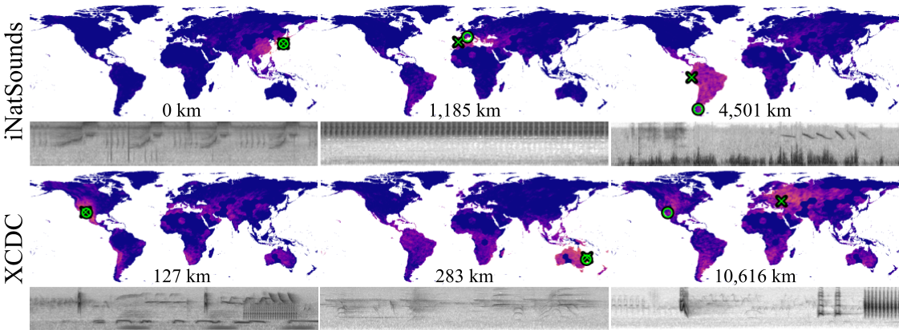

Bioacoustic Geolocation: Species Sounds as Geographic Signals

|
Abstract
Can we determine someone’s geographic location solely from the sounds they hear? Are acoustic signals enough to localize within a country, state, or even city? In this work, we tackle the challenge of global-scale audio geolocation, with a particular focus on wildlife and natural sounds. We posit that bioacoustic signals contain informative geolocation cues because of well-defined geographic ranges of species. To test this hypothesis, we benchmark image geolocation and soundscape mapping methods, design oracles and species-centric baselines, and propose a hybrid approach that combines species range prediction with retrieval-based geolocation. We further ask whether geolocation improves with species-diverse recordings and spatiotemporal aggregation across neighboring samples. Finally, we extend our study to multimodal geolocation with case studies from movies that combine both audio and visual content. Our results highlight the potential of incorporating bioacoustic signals into geospatial tasks, motivating future work on species recognition and audio geolocation.
|
 |
Citation
@article{chasmai2026bioacoustic,
title={Bioacoustic Geolocation: Species Sounds as Geographic Signals},
author={Chasmai, Mustafa and Liu, Wuao and Maji, Subhransu and Van Horn, Grant},
journal={Forty-third International Conference on Machine Learning},
year={2026}
}